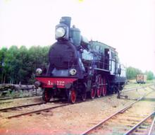
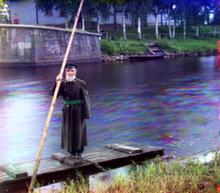
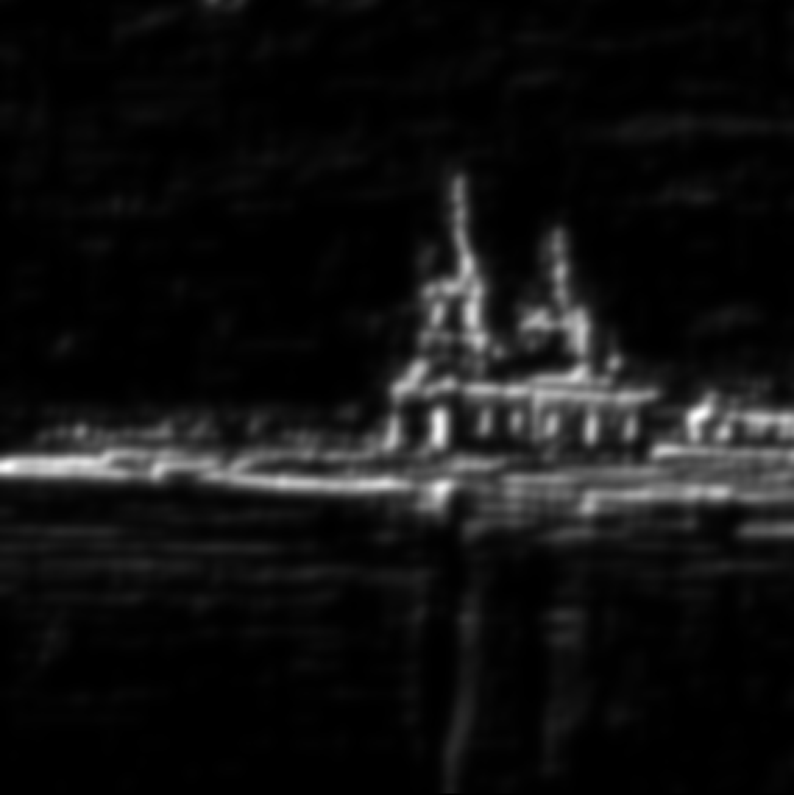
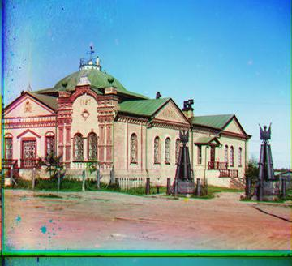
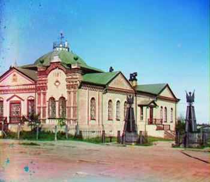
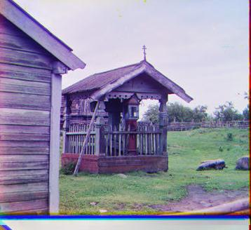
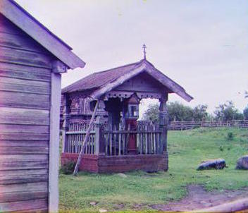
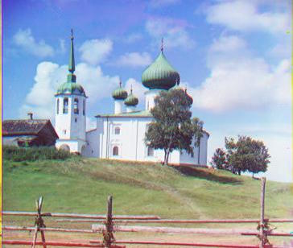
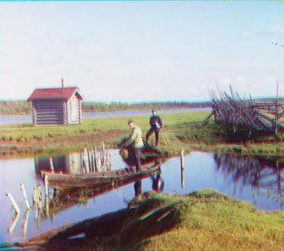
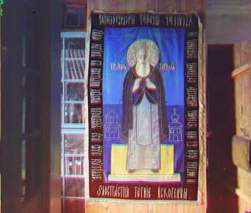

Computer Vision Final Project : Recognizing Images with Deep Learning
Introduction:
Sample output
 Eating disorders (ED) are pervasive and do not discriminate based on race, religion, gender, or socioeconomic status. Comorbidities include anxiety, depression, substance abuse, self-injurious behaviors, and history of trauma. ED are often a lifelong struggle, with approximately 2/3 of patients never achieving a full and sustained remission.
Exposure to media expressing “the thin ideal” can be triggering to individuals with ED as well as those at risk for developing them. Social media is rife with these triggers. Concurrent with the rise of social media, individuals with ED have created communities in which they support one another in the dangerous pursuit of this illness' goal: to be “thin enough.” Websites promoting anorexia (pro-ana) and ED as lifestyle choices valorize acting on ED symptoms. Such sites teach those suffering or at risk from ED how to act on the illness and support them in doing so, putting
them at risk for severe health complications.
The impact of images in this community far exceeds that of other communities surrounding
physical and mental health issues. Therefore, it is essential that clinicians and family members be able to identify websites containing images associated with the promotion of ED to prevent exposure to these triggers. This research aims to automatically detect such triggering material, with the ultimate goal of designing parental and clinical controls.
We report on a proof of concept, machine learning approach to identify pro-ana content, trained on example data from online social media searches. The training data was chosen to compare pro-ana content with other content similar in demographics and photographic style, composed of the hashtag-based categories #proana, #selfie, #ootd, and #greek.
We randomly chose 20% of these images as test data and train the Resnet Deep Learning neural network to classify the remaining images. On test data this gives 81% classification accuracy—a significant improvement over chance (25%). These proof of concept results suggest that it is feasible to automatically detect social media sources with triggering material, informing the creation of tools that can assist clinicians and family members to improve health outcomes.
We used the classifier to make a web application that assesses how pro-ana a social media
user’s content is. The tool, designed for clinicians, allows them to enter a social media username
and then gives an analysis of that user’s online presence, classifying its content. The tool also
displays a hashtag similarity map showing trending hashtags closely related to #proana.
Eating disorders (ED) are pervasive and do not discriminate based on race, religion, gender, or socioeconomic status. Comorbidities include anxiety, depression, substance abuse, self-injurious behaviors, and history of trauma. ED are often a lifelong struggle, with approximately 2/3 of patients never achieving a full and sustained remission.
Exposure to media expressing “the thin ideal” can be triggering to individuals with ED as well as those at risk for developing them. Social media is rife with these triggers. Concurrent with the rise of social media, individuals with ED have created communities in which they support one another in the dangerous pursuit of this illness' goal: to be “thin enough.” Websites promoting anorexia (pro-ana) and ED as lifestyle choices valorize acting on ED symptoms. Such sites teach those suffering or at risk from ED how to act on the illness and support them in doing so, putting
them at risk for severe health complications.
The impact of images in this community far exceeds that of other communities surrounding
physical and mental health issues. Therefore, it is essential that clinicians and family members be able to identify websites containing images associated with the promotion of ED to prevent exposure to these triggers. This research aims to automatically detect such triggering material, with the ultimate goal of designing parental and clinical controls.
We report on a proof of concept, machine learning approach to identify pro-ana content, trained on example data from online social media searches. The training data was chosen to compare pro-ana content with other content similar in demographics and photographic style, composed of the hashtag-based categories #proana, #selfie, #ootd, and #greek.
We randomly chose 20% of these images as test data and train the Resnet Deep Learning neural network to classify the remaining images. On test data this gives 81% classification accuracy—a significant improvement over chance (25%). These proof of concept results suggest that it is feasible to automatically detect social media sources with triggering material, informing the creation of tools that can assist clinicians and family members to improve health outcomes.
We used the classifier to make a web application that assesses how pro-ana a social media
user’s content is. The tool, designed for clinicians, allows them to enter a social media username
and then gives an analysis of that user’s online presence, classifying its content. The tool also
displays a hashtag similarity map showing trending hashtags closely related to #proana.
Baseline (Naive) Implementation:
To align the RGB images, I decided to use the Normalized Cross Correlation metric as a baseline, because I noticed that it outperfomed sum of squared differences (SSD) on a small sample of test images.
My program divides the image into 3 equal parts, aligns the second and the third parts (G and R) to the first (B).
For each image, I record the displacement vector that was used to align the parts.
Sample Single-Scale Processing Results
NCC final image |
G |
R |
B |
However, since exhaustive search becomes expensive if the displacement search range/image resolution are too large, I implemented a second method for the high-res images: a multi-scale aligning algorithm that searches over a user-specified window of displacements.
Image Pyramids
To handle alignment for larger images, I used image pyramids to implement a faster search algorithm. Given two images, my image pyramid alignment algorithm recursively resizes images by factors of 2 at multiple scales, averages them by taking a uniform average of each, and respectively aligns them from the coarsest scale to the finest scale (largest image).
Image Pyramid Sample Results (from high res. scans)
|  |  |
Bells and Whistles: Cropping with Edge Detection
Our overall goal is to reduce boundary noise in the dataset; thus, we need to crop the colorful, shifted borders. Hence, I used a combination of edge detection and averages to compute the cropping dimensions for each image. After generating the final color image by the alignment algorithms above, I use the following algorithm to crop the final image based on those computed dimensions.
Cropping Algorithm
Input: channel image I
- Run edge detection on I to create an edge response map
- average the edge response map horizontally to make vector V_h with length = image's height
- calculate a threshold equal to 2 standard deviations above the mean over all values in V_h
- sequentially search the first tenth of values in V from right to left, getting the first value that's higher than the threshold
- sequential search from left to right over the last tenth of V_h
- Save indices as the top and bottom cropping bounds
- Do similar search with V_v, vector generated by vertical average of edge response map to get left and right cropping bounds
Cropping and Edge Detection
| Original R | Edge Detection Map | Cropped R |
Sample Cropping Results
Before |
After |
Before |
After |
(More) Sample Results
|  |  |
|  |